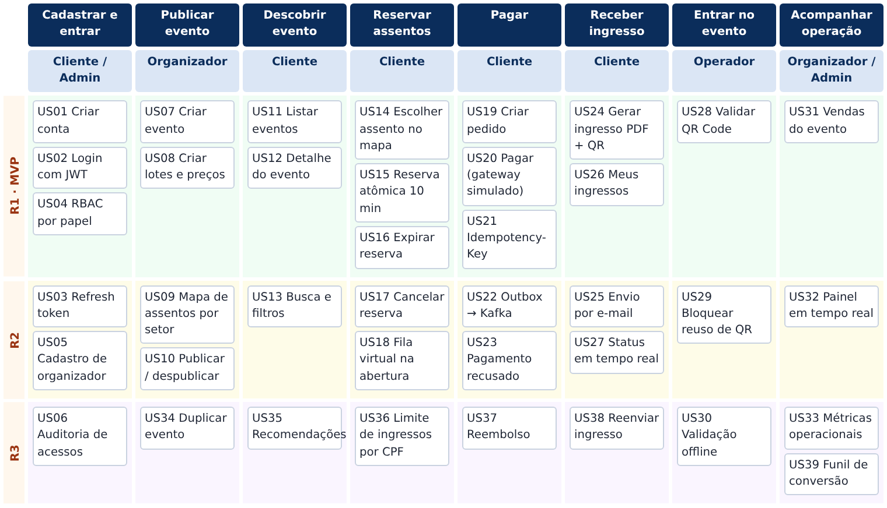
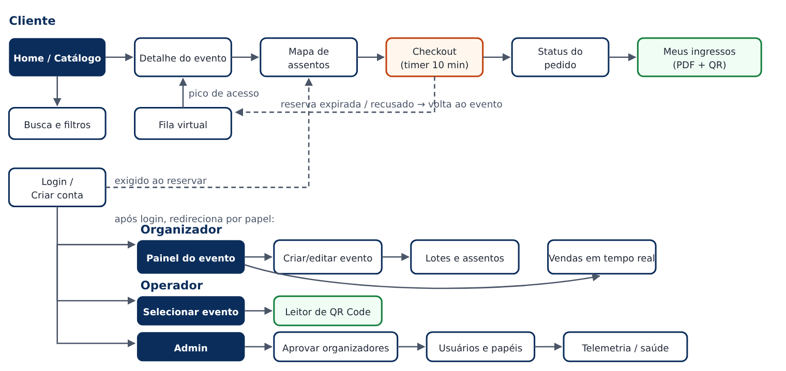
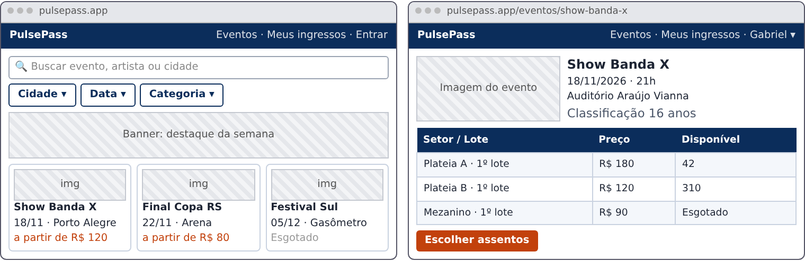
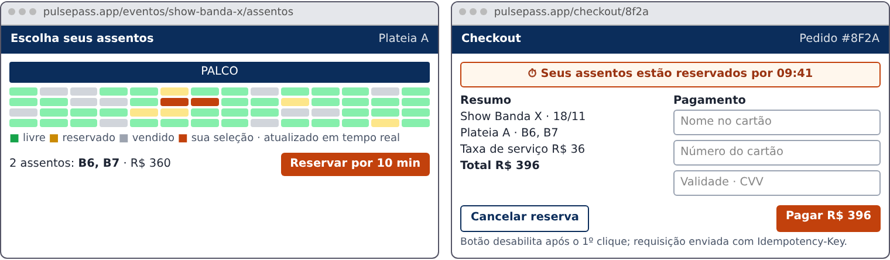
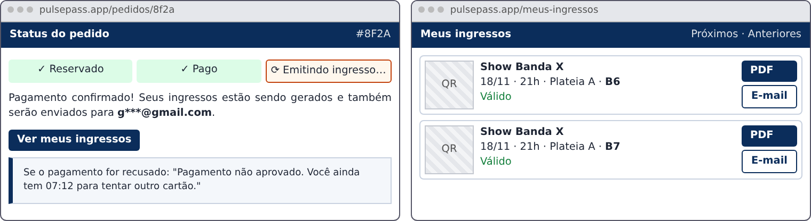
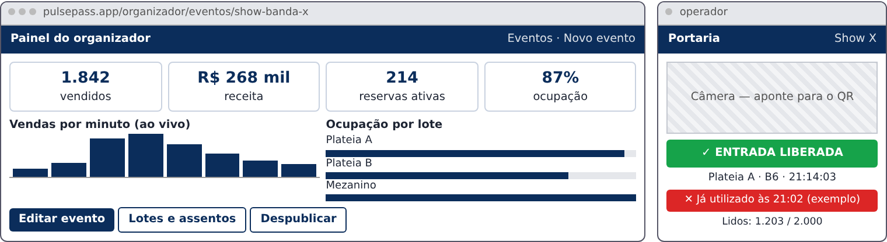
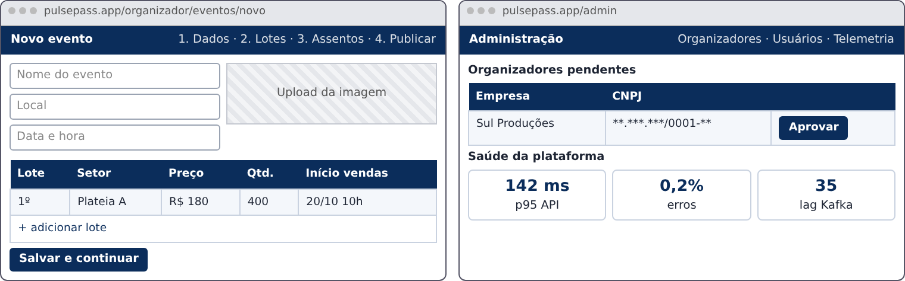

PONTIFÍCIA UNIVERSIDADE CATÓLICA DO RIO GRANDE DO SUL
ESCOLA POLITÉCNICA
46504-04 · Construção de Software · Turma 330 · 2026/2
Prof. Michael da Costa Mora
PROJETO INTEGRADOR · PACOTE 1
Processo de Desenvolvimento e Requisitos
Processo com IA (SDD) · Visão do Produto · Story Map · RNFs · Mockups e Navegação
Integrantes: Gabriel Kowaleski e Mayra Bordin
Repositório: https://github.com/K0W4/pulsepass
Entrega original: 14 de outubro de 2026
Versão atualizada para o Pacote 4 (ver "O que mudou")
Este documento reproduz o Pacote 1 entregue (o arquivo original foi mantido como PulsePass_Pacote1_entregue.pdf) e acrescenta, em destaque, o que a construção do produto mudou ou confirmou. O texto das seções 1 a 5 é o entregue; o que é novo aparece nas colunas "Status", "Estado" e "Usado de fato", nas notas sobre as telas e nesta seção.
qtd_reservada e qtd_vendida); (4) a expiração da reserva fica suspensa por até 30 s durante o pagamento; (5) com a fila virtual ligada, uma admissão vale uma reserva e dura 5 minutos; (6) o e-mail do comprador só viaja no evento do pagamento e é apagado da Emissão depois do envio./specs, escrita antes do código (seção 1.4). As regras dos agentes estão versionadas em .claude/CLAUDE.md. O código foi gerado com apoio do Claude Code e conferido por testes unitários, de integração e de mutação e pelo smoke contra a stack real.O grupo adota um processo iterativo e incremental baseado em Spec-Driven Development (SDD): toda funcionalidade nasce de uma especificação escrita e revisada por humanos, que vira o contrato para os agentes de IA gerarem código, testes e documentação. A IA acelera a execução; a decisão (o que construir, aceitar ou rejeitar) permanece com o time. O ciclo é organizado em sprints de duas semanas alinhadas aos quatro pacotes de entrega da disciplina.
/specs com três arquivos: requirements.md (histórias e critérios de aceite), design.md (contratos de API, eventos Kafka, modelo de dados, decisões) e tasks.md (passos pequenos e verificáveis). O rascunho é gerado pelo agente de especificação a partir da história e dos RNFs.feature/*, com contexto restrito à spec e ao módulo (microsserviço) correspondente.| Finalidade | Ferramenta prevista | Uso no projeto | Usado de fato |
|---|---|---|---|
| Assistente/agente de código | Claude Code (CLI) e GitHub Copilot (IDE) | Geração de specs, implementação por task, testes, refatoração e revisão de PR | Claude Code (specs, código, testes e documentação; regras em .claude/CLAUDE.md) |
| Gestão do backlog | GitHub Projects (quadro Kanban + Story Map) | Épicos como milestones, histórias como issues com rótulos de release | Story Map e backlog neste documento; o quadro e as issues do GitHub não foram criados |
| Versionamento e GCS | Git + GitHub (Git Flow simplificado) | main, develop, feature/*, fix/*; PR obrigatório | Git com ramos feature/* e Conventional Commits; a proteção de branch e a revisão cruzada ainda não estão ligadas |
| CI/CD | GitHub Actions + Docker Compose | Lint, testes unitários/integração, build de imagens | GitHub Actions (lint, testes, front-end, smoke, segredos, mutação, publicação no GHCR) e Docker Compose |
| Design / UX | Figma | Mockups (seção 5) e protótipo navegável | Os mockups da seção 5 (arquivos de imagem); a SPA os seguiu |
| Documentação arquitetural | Markdown + Mermaid / Structurizr (C4) | Diagramas versionados junto ao código (Pacote 2) | Mermaid e SVG nos documentos do Pacote 2; ADRs em docs/adr |
| Qualidade | JUnit 5, Testcontainers, PIT, SonarLint | Cobertura > 70% do domínio, testes de integração e mutação | JUnit 5, Testcontainers, PIT, JaCoCo, Spotless, k6, Lighthouse e axe-core |
| Agente | Entrada → Saída | Guarda-corpos |
|---|---|---|
| Spec Agent | História + RNFs → requirements.md, design.md, tasks.md | Não inventa regra de negócio: marca dúvidas como [ABERTO] para o time decidir |
| Code Agent | Task aprovada → código em branch feature/* | Escopo limitado ao serviço da task; sem acesso a segredos; commits pequenos |
| Test Agent | Critérios de aceite → testes unitários e de integração | Testes devem falhar antes da implementação; mutação ≥ 60% nos módulos críticos |
| Review Agent | Diff do PR → comentários de revisão | Apenas sugere; nunca aprova nem faz merge |
| Docs Agent | Código + specs → README, ADRs e diagramas C4 | Documentação revisada no mesmo PR da mudança |
Estrutura prevista no Pacote 1 e, abaixo, a que existe no repositório (uma pasta por funcionalidade):
/specs /iam/organizadores-auditoria/ requirements.md · design.md · tasks.md /inventario/reserva-atomica/ /inventario/busca-publicacao/ /inventario/fila-virtual/ (inclui o rate limit do gateway) /checkout/pagamento-idempotente/ /emissao/ingresso-qr/ /emissao/email-comprovante/ /realtime/tempo-real/ /telemetria/painel-tempo-real/ /.claude/CLAUDE.md regras dos agentes (padrões de código, arquitetura, proibições) /docs/adr/ decisões arquiteturais (ADR-001 a ADR-008 no Pacote 2; ADR-009 em diante aqui)
Na abertura de vendas de megaeventos (shows, finais esportivas, festivais), milhares de compradores acessam a plataforma no mesmo segundo. Sistemas baseados apenas em HTTP síncrono esgotam conexões de banco, ficam lentos ou fora do ar e, no pior caso, vendem o mesmo assento duas vezes. Para o comprador isso gera frustração e desconfiança; para o organizador, prejuízo financeiro, reembolsos e dano à marca.
| Perfil | Descrição | Principais necessidades |
|---|---|---|
| Cliente (comprador) | Público final que compra ingressos, geralmente pelo celular e no pico de abertura de vendas. | Ver disponibilidade real, garantir o assento, pagar sem cobrança duplicada, receber o ingresso na hora. |
| Organizador | Produtora responsável pelo evento. | Cadastrar eventos, lotes e mapas de assentos; acompanhar vendas em tempo real. |
| Operador | Equipe de portaria/controle de acesso no dia do evento. | Validar QR Codes rapidamente e impedir uso duplicado de ingressos. |
| Administrador | Equipe da plataforma PulsePass. | Aprovar organizadores, gerir papéis, auditar acessos e monitorar a saúde do sistema. |
| Sistemas externos | Gateway de pagamento (simulado) e serviço de e-mail/notificação. | Integração assíncrona e tolerante a falhas. |
| Módulo | Capacidades |
|---|---|
| Identidade e Governança (IAM) | Login com JWT e refresh token (Keycloak), RBAC com 4 papéis, cadastro e aprovação de organizadores, auditoria de credenciais. |
| Inventário e Concorrência | Eventos, lotes e mapas de assentos; catálogo de alta leitura (cache); bloqueio e liberação atômica de assentos; eventos de expiração de reserva. |
| Transações e Checkout | Máquina de estados do pedido (Criado → Reservado → Aguardando → Pago / Expirado), Idempotency-Key, Transactional Outbox, integração com gateway simulado. |
| Emissão e Notificações | Consumo de pagamentos confirmados, ingresso em PDF com QR Code e carimbo de tempo, envio por e-mail, atualização de tela em tempo real (WebSocket). |
| Telemetria e DevOps | Ingestão de eventos de navegação e compra, painel de métricas em tempo real, CI/CD e orquestração com Docker Compose. |
Dentro do escopo: venda de ingressos com e sem assento marcado, reserva com expiração, pagamento via gateway simulado, emissão e validação de ingresso, painéis do organizador e operacional.
Fora do escopo: integração com gateways de pagamento reais, revenda/transferência entre usuários, aplicativo móvel nativo (o front-end será SPA responsiva), meia-entrada com validação documental e emissão fiscal.
| Métrica de sucesso | Resultado |
|---|---|
| 0 casos de sobre-venda em teste de carga com concorrência simulada no mesmo assento. | Atendida: 500 reservas simultâneas no mesmo assento, 1 sucesso (ReservaConcorrenteIT). |
| 100% das reservas não pagas liberadas em até 10 min + 30 s. | Atendida (ExpiracaoEOutboxIT). |
| 0 cobranças duplicadas em requisições repetidas com a mesma Idempotency-Key. | Atendida (CheckoutIT: 20 chamadas concorrentes, 1 pagamento). |
| Ingresso disponível ao comprador em até 30 s após a confirmação do pagamento (p95). | Atendida e medida pelo telemetria-service (ver o Pacote 4). |
| Validação de ingresso na portaria em menos de 1 s (p95). | Validação por uma única atualização condicional no banco; 50 leituras simultâneas liberam exatamente 1 (EmissaoIT). Latência p95 da rota não foi medida em separado. |
| ID | Épico | Objetivo | Módulo |
|---|---|---|---|
| EP1 | Identidade e Acesso | Usuários se autenticam com segurança e acessam apenas o que seu papel permite. | IAM |
| EP2 | Gestão de Eventos | Organizadores publicam eventos, lotes e mapas de assentos. | Inventário |
| EP3 | Descoberta e Reserva | Compradores encontram eventos e reservam assentos sem conflito. | Inventário |
| EP4 | Checkout e Pagamento | Pedidos são pagos uma única vez, com estados consistentes. | Checkout |
| EP5 | Emissão e Acesso | Ingressos são emitidos, entregues e validados na entrada. | Emissão |
| EP6 | Operação e Telemetria | Organizadores e admins acompanham vendas e saúde do sistema. | Telemetria |
Leitura: a linha superior é o backbone (jornada do usuário, da esquerda para a direita); abaixo, as histórias de cada etapa, divididas horizontalmente por release. R1 = MVP (fluxo fim a fim mínimo), R2 = robustez e experiência, R3 = operação e analytics.

| ID | Épico | História | Rel. | Status |
|---|---|---|---|---|
| US01 | EP1 | Como cliente, quero criar uma conta com e-mail e senha, para poder comprar ingressos. | R1 | Atendido |
| US02 | EP1 | Como usuário, quero entrar na plataforma e receber um token de acesso, para usar as funções do meu perfil sem logar a cada tela. | R1 | Atendido |
| US03 | EP1 | Como usuário, quero que minha sessão seja renovada automaticamente, para não perder uma compra por expiração do token. | R2 | Atendido |
| US04 | EP1 | Como administrador, quero que cada rota exija o papel adequado (Cliente, Organizador, Operador, Admin), para proteger as operações sensíveis. | R1 | Atendido |
| US05 | EP1 | Como organizador, quero solicitar meu cadastro com dados da empresa, para que um admin aprove meu acesso. | R2 | Atendido |
| US06 | EP1 | Como administrador, quero consultar o histórico de logins e alterações de credenciais, para auditar acessos suspeitos. | R3 | Atendido |
| US07 | EP2 | Como organizador, quero cadastrar um evento com nome, local, data e imagem, para divulgá-lo na plataforma. | R1 | Atendido |
| US08 | EP2 | Como organizador, quero criar lotes com preço, quantidade e período de venda, para controlar a precificação. | R1 | Atendido |
| US09 | EP2 | Como organizador, quero definir setores e assentos numerados, para vender lugares marcados. | R2 | Atendido |
| US10 | EP2 | Como organizador, quero publicar ou despublicar um evento, para controlar quando as vendas abrem. | R2 | Atendido |
| US11 | EP3 | Como cliente, quero ver a lista de eventos disponíveis, para escolher o que me interessa. | R1 | Atendido |
| US12 | EP3 | Como cliente, quero ver detalhes, lotes e disponibilidade de um evento, para decidir a compra. | R1 | Atendido |
| US13 | EP3 | Como cliente, quero buscar por nome, cidade e data, para encontrar eventos rapidamente. | R2 | Atendido |
| US14 | EP3 | Como cliente, quero escolher assentos em um mapa que mostra o que está livre, reservado ou vendido, para escolher meu lugar. | R1 | Atendido |
| US15 | EP3 | Como cliente, quero que os assentos escolhidos fiquem reservados para mim por 10 minutos, para concluir o pagamento com calma. | R1 | Atendido |
| US16 | EP3 | Como plataforma, quero liberar automaticamente reservas não pagas após 10 minutos, para devolver os assentos à venda. | R1 | Atendido |
| US17 | EP3 | Como cliente, quero cancelar minha reserva, para liberar os assentos se desistir. | R2 | Atendido |
| US18 | EP3 | Como cliente, quero entrar em uma fila virtual quando a demanda estiver alta, para ter uma chance justa de comprar. | R2 | Atendido |
| US19 | EP4 | Como cliente, quero revisar meu pedido com itens e total, para confirmar antes de pagar. | R1 | Atendido |
| US20 | EP4 | Como cliente, quero pagar meu pedido, para garantir os ingressos. | R1 | Atendido |
| US21 | EP4 | Como cliente, quero que um clique repetido em "Pagar" não gere duas cobranças, para não ser cobrado em dobro. | R1 | Atendido |
| US22 | EP4 | Como plataforma, quero publicar o evento de pedido pago pelo padrão Outbox, para que nenhum pagamento confirmado deixe de gerar ingresso. | R2 | Atendido |
| US23 | EP4 | Como cliente, quero ser avisado se o pagamento for recusado e poder tentar de novo dentro do prazo da reserva. | R2 | Atendido |
| US24 | EP5 | Como cliente, quero receber meu ingresso em PDF com QR Code após o pagamento, para apresentar na entrada. | R1 | Atendido |
| US25 | EP5 | Como cliente, quero receber o ingresso por e-mail, para ter uma cópia fora da plataforma. | R2 | Atendido |
| US26 | EP5 | Como cliente, quero ver todos os meus ingressos em uma página, para acessá-los no dia do evento. | R1 | Atendido |
| US27 | EP5 | Como cliente, quero ver o status do pedido mudar em tempo real (aguardando → pago → emitido), sem recarregar a página. | R2 | Atendido |
| US28 | EP5 | Como operador, quero ler o QR Code do ingresso e ver se é válido, para liberar a entrada. | R1 | Atendido |
| US29 | EP5 | Como operador, quero que um ingresso já utilizado seja recusado, para evitar fraudes. | R2 | Atendido |
| US31 | EP6 | Como organizador, quero ver total vendido e ocupação por lote, para acompanhar meu evento. | R1 | Atendido |
| US32 | EP6 | Como organizador, quero um painel atualizado em tempo real durante a abertura das vendas, para reagir rapidamente. | R2 | Atendido |
| US33 | EP6 | Como administrador, quero ver métricas operacionais (latência, erros, lag do Kafka), para garantir a saúde da plataforma. | R3 | Atendido |
Histórias de R3 não detalhadas acima (US30, US34 a US39) permanecem no backlog como candidatas; não foram implementadas.
Dado que o assento A10 está LIVRE
Quando dois clientes tentam reservá-lo ao mesmo tempo
Então apenas um recebe a reserva (status RESERVADO, expira em 10 min) e o outro recebe HTTP 409 "assento indisponível"
E o mapa de ambos mostra A10 como reservado em até 2 s
Dado um pedido RESERVADO há 10 minutos sem pagamento
Quando o prazo expira
Então o pedido passa para EXPIRADO, os assentos voltam para LIVRE e o evento "reserva.expirada" é publicado no Kafka
Dado um pedido AGUARDANDO pagamento
Quando o cliente envia POST /pagamentos duas vezes com a mesma Idempotency-Key
Então o gateway é chamado apenas uma vez, a segunda resposta é idêntica à primeira e existe somente um registro de pagamento
Dado um ingresso EMITIDO e nunca utilizado
Quando o operador lê o QR Code
Então a tela mostra "Entrada liberada" com nome do evento e setor e o ingresso passa para UTILIZADO
Quando o mesmo QR é lido novamente
Então a tela mostra "Ingresso já utilizado" com horário da primeira leitura
Os requisitos abaixo são mensuráveis e foram verificados por testes automatizados, testes de carga ou inspeção no CI. Valores de carga referem-se ao ambiente local em Docker Compose e servem como meta do projeto acadêmico. A coluna "Estado" é nova; a evidência de cada um está no documento do Pacote 4.
| ID | Categoria | Requisito | Critério de verificação | Estado |
|---|---|---|---|---|
| RNF01 | Consistência | O sistema não pode vender o mesmo assento ou ultrapassar a capacidade de um lote (zero oversell). | Teste concorrente com 500 requisições simultâneas no mesmo assento → exatamente 1 sucesso. | Atendido |
| RNF02 | Consistência | Reservas não pagas expiram em 10 min e liberam os assentos. | Liberação em até 10 min + 30 s em 100% dos casos de teste. | Atendido |
| RNF03 | Confiabilidade | Operações de pagamento são idempotentes via cabeçalho Idempotency-Key. | Requisições repetidas não geram cobrança nem registro duplicado. | Atendido |
| RNF04 | Confiabilidade | Eventos de domínio são publicados pelo padrão Transactional Outbox (sem dual-write). | Queda do Kafka durante o pagamento não perde eventos; publicação ocorre ao retornar. | Atendido |
| RNF05 | Confiabilidade | Consumidores Kafka são idempotentes (deduplicação por ID do evento). | Reprocessar o mesmo evento não gera ingresso duplicado. | Atendido |
| RNF06 | Desempenho | Catálogo de eventos responde em p95 ≤ 200 ms sob 1.000 req/s (leitura via cache Redis). | Teste de carga (k6/Gatling) — bônus. | Atendido |
| RNF07 | Desempenho | Reserva de assento responde em p95 ≤ 500 ms sob 200 reservas/s. | Teste de carga — bônus. | Atendido |
| RNF08 | Desempenho | Ingresso emitido em até 30 s (p95) após confirmação do pagamento. | Medição pelo painel de telemetria. | Atendido |
| RNF09 | Escalabilidade | Serviços sem estado em memória, podendo ter múltiplas réplicas; tópicos Kafka particionados por evento. | Subir 2 réplicas no Compose sem erro funcional. | Atendido |
| RNF10 | Resiliência | Chamadas ao gateway usam timeout, retentativa com backoff e circuit breaker. | Gateway simulado com falha/atraso não derruba o checkout. | Atendido |
| RNF11 | Disponibilidade | Falha do serviço de Emissão ou Notificação não impede a venda; mensagens ficam no Kafka até o reprocessamento. | Teste derrubando o serviço durante compras. | Atendido |
| RNF12 | Segurança | Autenticação stateless com JWT assinado (access token 15 min, refresh token 7 dias armazenado em chave-valor) via Keycloak. | Token expirado/adulterado → HTTP 401. | Atendido |
| RNF13 | Segurança | Autorização RBAC em todas as rotas (Cliente, Organizador, Operador, Admin). | Testes de integração por papel → HTTP 403 quando indevido. | Atendido |
| RNF14 | Segurança | QR Code contém identificador assinado, impossível de forjar a partir de dados públicos. | QR alterado é rejeitado na validação. | Atendido |
| RNF15 | Privacidade | Dados pessoais tratados conforme a LGPD: mínimo necessário, senhas apenas no IdP, logs sem dados sensíveis. | Revisão de código e de logs. | Parcial |
| RNF16 | Observabilidade | Logs estruturados com correlation-id, métricas e rastreamento distribuído (OpenTelemetry, Prometheus, Grafana). | Uma compra é rastreável ponta a ponta em um único trace. | Atendido |
| RNF17 | Manutenibilidade | Cobertura de testes > 70% no domínio (máquinas de estado); testes de integração com Testcontainers (PostgreSQL, Kafka, Redis). | Relatório de cobertura no CI. | Atendido |
| RNF18 | Manutenibilidade | Código passa por linter e revisão; arquitetura documentada em C4 e ADRs. | Pipeline falha se o lint falhar. | Atendido |
| RNF19 | Portabilidade | Todo o ambiente sobe com um único docker compose up (backend, frontend, bancos, Kafka e UI de mensageria). | Execução em máquina limpa. | Atendido |
| RNF20 | Integração contínua | Pipeline no GitHub Actions executa lint, testes e build em cada PR e merge na branch develop. | PR bloqueado se o pipeline falhar. | Parcial |
| RNF21 | Usabilidade | SPA responsiva (360 px a 1920 px); compra concluída em no máximo 5 telas a partir do detalhe do evento. | Teste com usuários / inspeção do fluxo. | Atendido |
| RNF22 | Acessibilidade | Front-end segue WCAG 2.1 nível AA (contraste, navegação por teclado, textos alternativos); mapa de assentos com alternativa em lista. | Auditoria com Lighthouse/axe ≥ 90. | Parcial |
| RNF23 | Equidade | Na abertura de vendas, o acesso ao checkout respeita ordem de chegada (fila virtual) quando a capacidade é excedida. | Teste de carga com fila ativa. | Atendido |
Mockups em média fidelidade (wireframes) da SPA, como entregues em 14/10. Cores e tipografia eram provisórias; o foco é estrutura, conteúdo e fluxo. Cada tela indica as histórias que atende.






| Tela desenhada | Histórias | Como ficou na SPA |
|---|---|---|
| Tela 1 · Home/Catálogo | US11, US13 | Implementada: lista de eventos com busca por nome, local e datas. |
| Tela 2 · Detalhe do evento | US12 | Implementada: lotes e disponibilidade. |
| Tela 3 · Mapa de assentos | US14, US15 | Implementada: mapa com alternativa em lista; estados atualizados por WebSocket; mensagem de assento já reservado; espera na fila virtual. |
| Tela 4 · Checkout | US17, US19 a US21 | Implementada: contagem regressiva, pagamento idempotente, cancelamento. |
| Tela 5 · Status do pedido | US23, US27 | Implementada dentro do checkout: o texto do status muda em tempo real (WebSocket) até a emissão. |
| Tela 6 · Meus ingressos | US24 a US26 | Implementada: QR Code e download do PDF; o e-mail traz os mesmos PDFs. |
| Tela 7 · Painel do organizador | US07 a US10, US31, US32 | Implementada: meus eventos (publicar, despublicar, fila), formulários, painel de vendas ao vivo e painel analítico. |
| Tela 8 · Leitor de QR do operador | US28, US29 | Implementada: digitação do código e leitura pela câmera (Chrome e Edge no Android e no macOS). |
| Tela 9 · Cadastro de evento em etapas | US07 a US09 | Implementada como três formulários na área do organizador (evento, lote e setor), não como assistente em etapas. |
| Tela 10 · Administração | US04 a US06, US33 | Implementada: aprovação de organizadores, auditoria de acessos, saúde da plataforma e painel analítico. A gestão de usuários e papéis fica no console do Keycloak. |